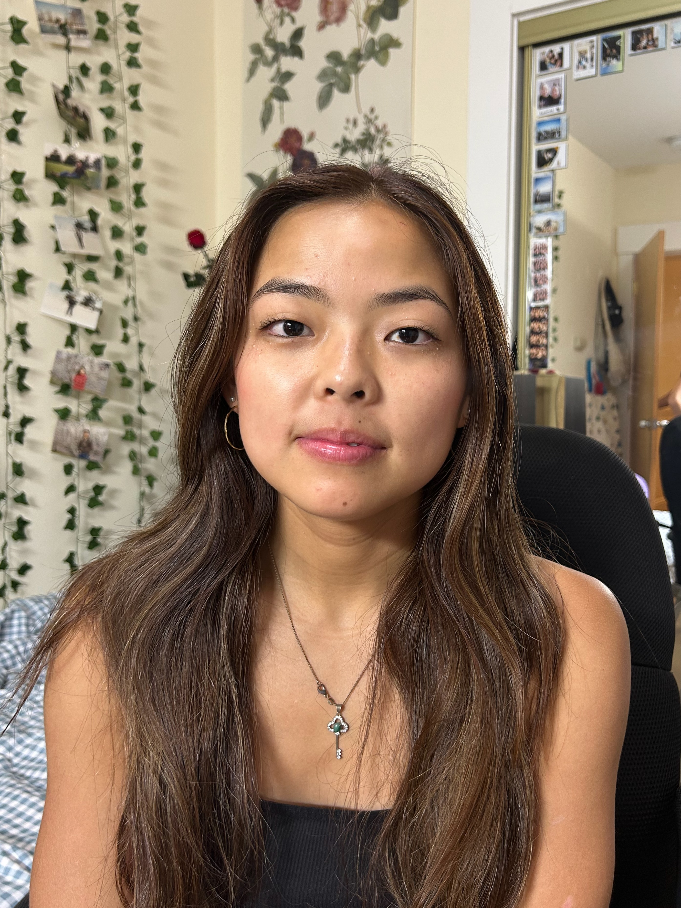
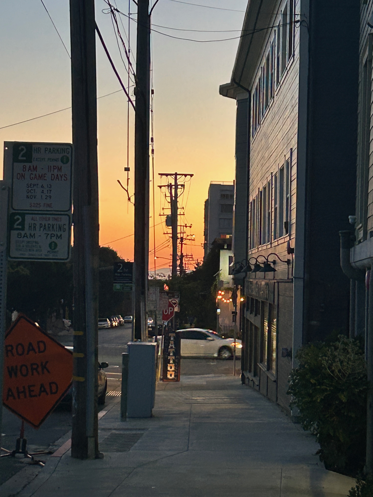
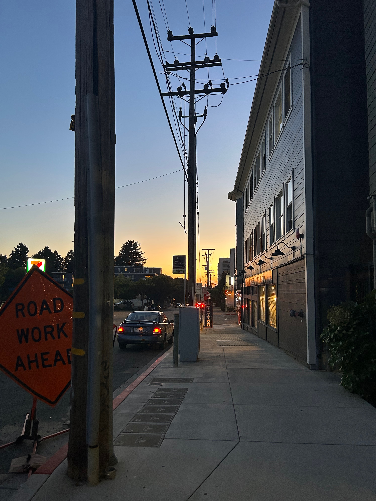

Part 1: Selfie


Part 2: Architecture


Picture 1: close-up photo
Picture 2: far-away + zoom-in photo
These are two pictures of my beautiful roommate Christy. While it looks like the backgrounds are completely different, the shelf in the second image is just hidden behind her in the first.
Picture 1: close-up photo
Picture 2: far-away + zoom-in photo
These photos of Parker Street look very different because the zoomed picture captures much less of the sky and closer details, even though the road sign and building are in roughly the same location.
A small dolly zoom (I ran out of space to step backwards in my room) of my stuffed animals!
For all the examples in this project, close-up images see the subject as much closer than other objects. Far-away pictures that have been zoomed in do not see as drastic of a difference between the depth of the subject and the depth of the background, hence "flattening" the image.